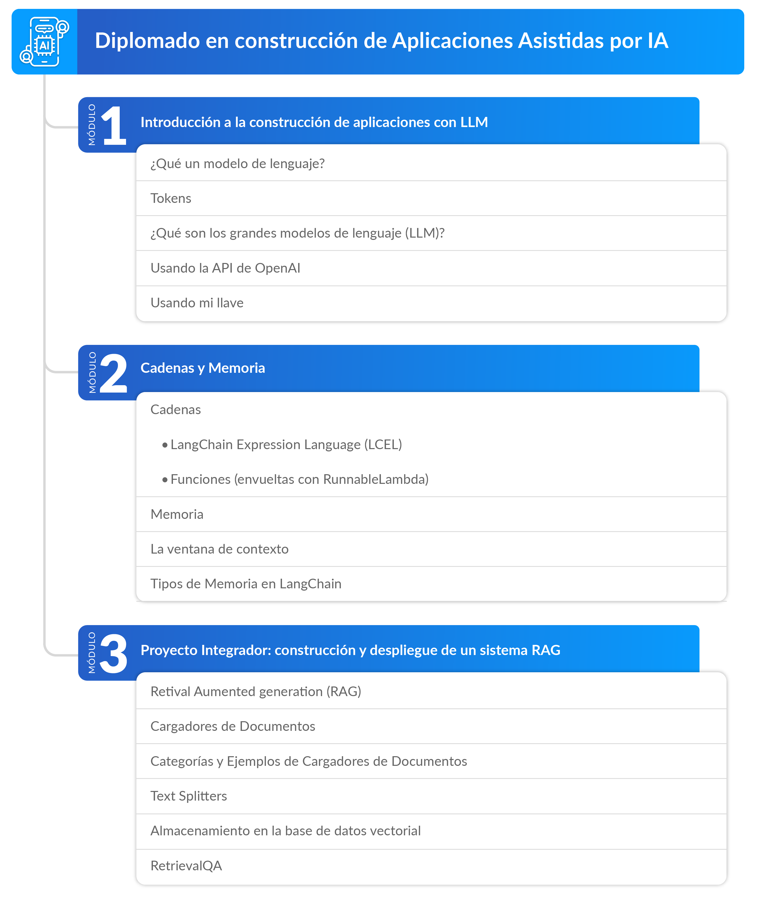

Notas para el curso Principios de Inteligencia Artificial
Aunque la inteligencia artificial ha existido como un campo exitoso y prometedor entre los expertos durante varias décadas, la llegada de capacidades computacionales más avanzadas —ofrecidas por las GPU modernas— y las habilidades demostradas con el lanzamiento de ChatGPT fueron una gran sorpresa para muchos.
No está del todo claro cómo este "pequeño" avance en la escala de los modelos pudo desencadenar la gran cantidad de aplicaciones asistidas por IA que estamos viendo explotar cada semana. Lo que sí es claro es que el campo de la ingeniería de software está siendo revolucionado, y que el nuevo paradigma de construcción de software ya no consiste en los tradicionales flujos de ejecución, sino que la nueva ingeniería de sistemas debe integrar a los LLM en dichos flujos.
Hemos diseñado este curso para introducirte a este nuevo paradigma. Este curso está basado en LangChain, el framework más popular de la actualidad para interactuar con las APIs de los principales modelos de lenguaje.
Resultados de Aprendizaje
-
Diseñar y aplicar prompt templates y cadenas de ejecución en LangChain: los estudiantes serán capaces de crear instrucciones reutilizables (prompt templates) y encadenarlas utilizando el Lenguaje de Expresión de LangChain (LCEL), especificando formatos de salida con output parsers para interactuar eficazmente con modelos de lenguaje.
-
Desarrollar chatbots con gestión de memoria contextual: los estudiantes podrán construir chatbots funcionales utilizando LangChain, integrando memorias para almacenar y gestionar información contextual.
-
Construir y desplegar sistemas RAG para interacción con documentos: los estudiantes estarán capacitados para integrar componentes como loaders de documentos, retrievers y bases de datos vectoriales en LangChain, creando sistemas de Retrieval-Augmented Generation (RAG) que permitan conversar con archivos PDF.
Pregunta Orientadora
La siguiente imagen es la respuesta de ChatGPT al prompt:
“Based on what you know about me, draw a picture of what you think my current life looks like.”
Figura 1: Representación visual generada por ChatGPT sobre la vida del autor del diplomado.
¿Qué tan parecida es esta imagen a tu vida en tu caso? ¿Te sorprende que ChatGPT tenga tanta información sobre tu vida y tus gustos o todo lo contrario? ¿Qué opinas que va a pasar con los datos en un futuro donde todo es asistido por IA? ¿Le daremos a las IA la información sensible de las personas y las empresas?
¿Cómo podemos asegurarnos de que nuestros datos permanezcan privados, y al mismo tiempo, aprovechar todo el poder de los modelos de lenguaje en los datos privados?
Mapa del curso
Estos son los módulos que conforman nuestro diploma:

Módulo 1: introducción a la Construcción de Aplicaciones con LLM
- Fundamentos de modelos de lenguaje grandes (LLM) y su integración en flujos de software
- Creación y uso de prompt templates para instrucciones reutilizables
- Encadenamiento de instrucciones con el Lenguaje de Expresión de LangChain (LCEL)
- Especificación de formatos de salida mediante output parsers
Módulo 2: Cadenas y Memoria
- Desarrollo de chatbots funcionales con LangChain
- Gestión de memoria contextual para mantener el historial de interacciones
- Implementación práctica de un chatbot funcional
Módulo 3: Proyecto integrador: construcción y Despliegue de un Sistema RAG
- Integración de document loaders para procesar archivos PDF
- Uso de retrievers y bases de datos vectoriales para recuperación de información
- Construcción de sistemas Retrieval-Augmented Generation (RAG)
- Despliegue de una aplicación RAG para interacción conversacional con documentos PDF
Cronograma de actividades
| Actividad de aprendizaje | Evidencia de aprendizaje | Semana | Ponderación |
|---|---|---|---|
| Actividad de conocimientos previos | Actividad de conocimientos previos | Semana 1 | 0% |
| Reto formativo 1 y 2 | EA1: Templates y Output Parsers | Semanas 2 y 3 | 35% |
| Cadenas | EA2: Generación de Informes de Salud Utilizando Archivos CSV | Semanas 4 y 5 | 35% |
| Reto formativo: "Carga y división de archivos PDF" | EA3: Chat con tus datos. Proyecto integrador | Semanas 6, 7 y 8 | 30% |
| Total | 100% |
Actividad de conocimientos previos. Foro: Transformers y mecanismo de atención
Como actividad de conocimientos previos, te invitamos a participar en el foro de discusión sobre el funcionamiento de los LLM.
Configuración del sistema antes de comenzar
Antes de empezar a trabajar con los módulos del curso, debes configurar tu sistema para poder ejecutar los ejemplos correctamente.
La forma más sencilla de hacerlo es descargando el archivo de configuraci√≥n üìÑenvironment.yml
, el cual creará automáticamente un entorno de Conda llamado DiplomadoIA_env con todas las dependencias necesarias para el curso.
Requisitos previos
- Tener Anaconda instalado en tu computador.
- Usar una terminal Bash (en Windows puedes usar Anaconda Prompt, git bash, WSL o similares).
Instalación
Una vez descargado el archivo de configuración, ejecuta el siguiente comando en tu terminal:
Activación del entorno
Para activar el entorno en tu terminal, ejecuta:
A partir de aquí, cualquier comando que ejecutes usará las dependencias definidas para el curso.Uso del entorno en Visual Studio Code
Para tener en cuenta
Para ejecutar notebooks .ipynb en Visual Studio Code usando este entorno:
- Abre VS Code.
- Abre la carpeta del proyecto o el notebook deseado.
- En la parte superior derecha del notebook, haz clic en la selección de kernel.
- Elige el kernel correspondiente al entorno
diplomado_IA.
Si no aparece, reinicia VS Code o asegúrate de haber activado el entorno desde la terminal integrada. - Comienza a ejecutar celdas normalmente.